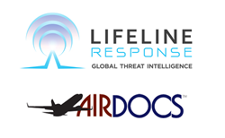

The following are projects I have helped develop in my career at LifeLine Response.
AirDocs, The Leader In Medical Response Announces Partnership With LifeLine Response, For Unified Medical Response Globally
“LifeLine Response is the bridge between our operational risk, crisis and resilience capabilities and the intelligence that drives situational awareness for global clients,” Christian Ronnow, Executive Vice President of Constellis.